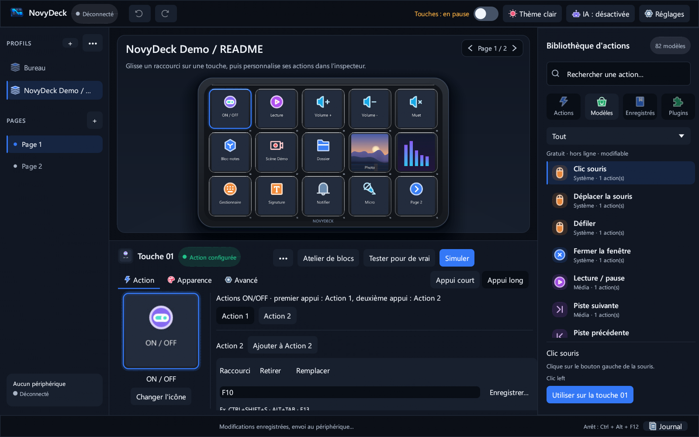
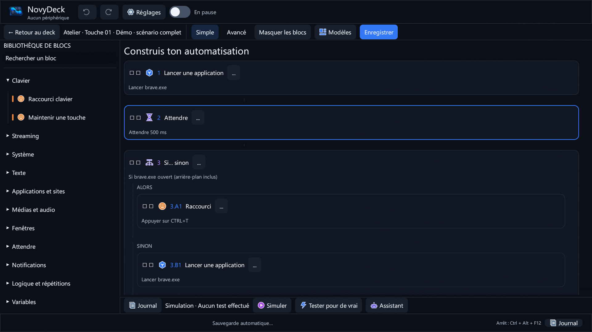

À chaque touche, sa personnalité.
Icône, image, GIF ou vidéo courte : composez l’apparence des 15 touches du D6. Organisez profils, pages et dossiers, puis prévisualisez avant d’envoyer.
Médias personnels préservés ; aperçu issu de l’application.NOVYDECK / V0.15.1 — WINDOWS
Donnez une forme à chaque idée. Une application native pour créer vos touches, orchestrer vos actions et étendre votre deck — sans renoncer au contrôle.
FIFINE AmpliGame D6 · Elgato Stream Deck testés
01 / UN OUTIL, TOUT UN UNIVERS
Un rendu 3D inspiré du D6 présente les possibilités. Les visuels du logiciel plus bas sont de véritables captures de NovyDeck.
Reconstitution 3D illustrative du FIFINE D6 · textures issues du projet
Interaction liée au défilement · sans vidéo simulant une interfaceIcône, image, GIF ou vidéo courte : composez l’apparence des 15 touches du D6. Organisez profils, pages et dossiers, puis prévisualisez avant d’envoyer.
Médias personnels préservés ; aperçu issu de l’application.Un appui court, un appui long, des macros en séquence. Les plugins compatibles peuvent recevoir les événements keyDown et keyUp, selon leur implémentation.
La prise en charge des événements dépend du plugin installé.Personnalisez les faces ON/OFF et choisissez votre thème. NovyDeck distingue l’état confirmé par un plugin d’une simple bascule locale.
Aucun état inconnu n’est présenté comme confirmé.02 / VOIR, PUIS AGIR
Nouveauté 0.15.1 : choisissez Action 1 ou Action 2 dans Actions ON/OFF ; Action 1 conserve l’action précédente et Action 2 se configure sans ouvrir l’Atelier. Le menu « … » d’une action, à la racine comme dans un bloc Atelier imbriqué, ouvre Supprimer. Captures authentiques du harnais Windows, rendues hors écran ; aucune preuve d’essai sur D6 physique. Les huit onglets suivants conservent des vues historiques.

Dans Actions ON/OFF, Action 1 conserve l’ancienne action ; configurez Action 2 sans passer par l’Atelier.
Capture authentique du harnais Windows, rendue hors écran ; aucun D6 physique connecté.03 / ATELIER / 0.14.0
Réordonnez ou imbriquez les blocs dans Alors, Sinon ou Répéter ; maintenez Ctrl pendant le glissement pour dupliquer. Annulez ou rétablissez vos changements.
Illustration de la logique de l’Atelier. Les blocs visibles dans la capture ci-dessous proviennent de l’application.

04 / APPARENCE
Un thème sombre pour la concentration, un thème clair pour la netteté. Le deck et vos images restent les vôtres.
Captures réelles du profil de démonstration.05 / ASSISTANT LOCAL / 0.14.0
L’assistant s’appuie sur les manifestes des plugins installés pour proposer des actions et peut demander une précision si la cible est ambiguë. Il ne comprend pas nécessairement toute demande.

Suggestions fondées sur des règles locales et aperçu des blocs.
Modèle IA local via composants à configurer, désactivé par défaut.
Des aides plus avancées restent une piste, pas une fonction annoncée.
06 / ÉCOSYSTÈME
Parcourez les plugins officiels et communautaires, consultez leurs prérequis puis installez après confirmation. Les actions des plugins s’enchaînent aussi dans l’Atelier.

Magasin intégré
Actions de plugins dans les macros
Mises à jour avec sauvegarde ciblée
Compatibilité avec des plugins Stream Deck non chiffrés
La compatibilité varie selon les plugins. Les archives chiffrées ne sont pas prises en charge.
07 / VOTRE ENVIRONNEMENT, VOS CHOIX
Home Assistant et Google Assistant passent par des plugins. Le serveur MCP propose des opérations à votre client compatible ; l’utilisateur garde la validation.
Les intégrations tierces peuvent nécessiter leurs propres services et comptes.LE FILM
Un extrait 1080p de la vidéo officielle. Le D6 est une animation 3D ; les captures de l’application sont réelles.
08 / À VOUS DE JOUER
NovyDeck est libre et gratuit. Téléchargez l’installateur Windows 0.15.1 ou consultez les autres fichiers publiés.
Windows 10/11 · 64 bits · licence MIT · FIFINE D6 et Elgato Stream Deck testés